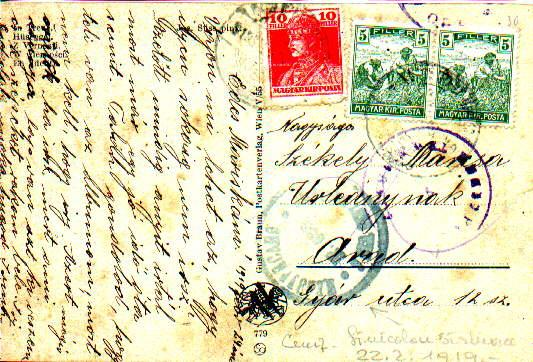
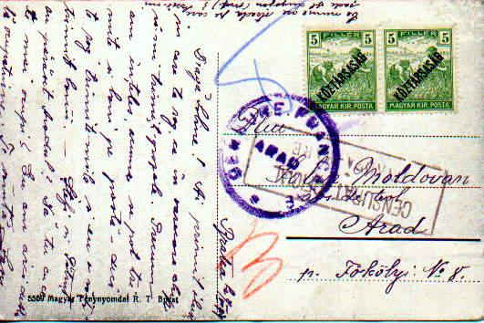
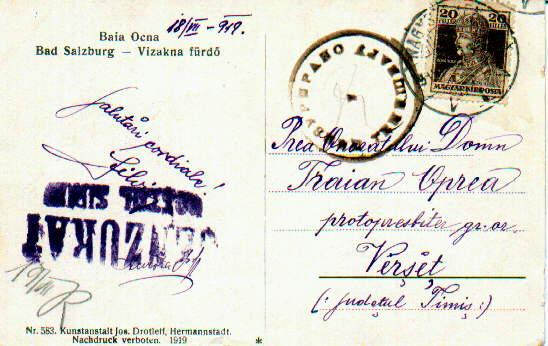
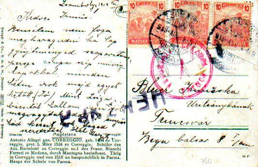

Following WW1, three of the former Austro-Hungarian territories became part of Romania (Bucovina, Transylvania and the Banat). The Romanian administrations were quickly established in each of these areas giving rise to its own local postal history. In all these new provinces civilian mail censorship was established. Romania had complete control of this in Bucovina and Transylvania but in the Banat,
two military forces allied to the Romanians, namely the French and Serbs, were interposed between the Hungarian and Romanian troops. The French and Serbs set up censorship offices prior to the arrival of the Romanians. The brief war between Romania and the Hungarian Soviet Republic (April - July 1919) led to the temporary occupation of Hungary and a few censorship offices were set up there.
A.1. Romanian double
censor markings
 Double censoring (by both sending and arrival offices). As far as I know,
there are no regulations for the re-censoring of the mail in 1919-1920, this
apparently happened because of irregular circumstances. Examples of double
censoring in OR or MZ are unknown to me, if they exist they are extremely
rare. One can usually see double censoring from 'TB' zone, for an example:
postmarks from Blaj + Odorhei (July 1920), Zalău + Oradea (July 1920) or
Lugoj + Buzias-Băi.
Double censoring (by both sending and arrival offices). As far as I know,
there are no regulations for the re-censoring of the mail in 1919-1920, this
apparently happened because of irregular circumstances. Examples of double
censoring in OR or MZ are unknown to me, if they exist they are extremely
rare. One can usually see double censoring from 'TB' zone, for an example:
postmarks from Blaj + Odorhei (July 1920), Zalău + Oradea (July 1920) or
Lugoj + Buzias-Băi.
A.2.
Serbian double censoring 
There is only one possibility involving censoring offices from
today's Romania: TIMIŞOARA and SÂNNICOLAUL MARE
B.1.1. Serbian-French Censoring (S-F/ F-S).
Here (below) one finds a combination between a Serb office in BW and a
French one in Arad. These covers occur in the following ways. Mail that
circulated between BE or BW and Arad (after May 25 censored according to
General Tournadre's decree as described above, see #2.3).
 The mail sent from BE (an area whithout
permanent censoring offices) went to one of the BW Serbian censorship
offices prior to being forwarded to Arad; this happened particularly during
the period December 1918 to January 1919. Some of the BW censorship towns
such as Nagy Kikinda / Kikinda, Versecz / Vrsac (see Fig. 1), Nagy Becskerek
/ Vel.Betschkerek (today Zrenjanin), Pancsevo / Pancevo are outside of
present day Romania; however, because of
the sending office in BE, such covers are fully interesting for Romanian
Postal Historians.
The mail sent from BE (an area whithout
permanent censoring offices) went to one of the BW Serbian censorship
offices prior to being forwarded to Arad; this happened particularly during
the period December 1918 to January 1919. Some of the BW censorship towns
such as Nagy Kikinda / Kikinda, Versecz / Vrsac (see Fig. 1), Nagy Becskerek
/ Vel.Betschkerek (today Zrenjanin), Pancsevo / Pancevo are outside of
present day Romania; however, because of
the sending office in BE, such covers are fully interesting for Romanian
Postal Historians.

B.1.2. French-Romanian censoring (F-R or R-F). This can be found on mail circulated between Arad (French censoring) to the Romanian occupied territories (T, MZ): After May 25th and until July 10, 1919 the combination should not be found because of the clear delineation of responsibilities between the French and Romanians in Arad (the French were not allowed to censor mail from or to Romanian territories, see #2.3). However, one does find such covers from the first days of July 1919. This was towards the end of the French occupation in Arad, when the decree was not followed.B.1.3. Serbian-Romanian censoring (S-R or R-S).

Combinations between Serb markings from BW and Romanian ones from T are quite unlikely during the "a" period and possible during the "b" period (see an example here). Combinations between Serb markings from BW and Romanian ones from OR are unlikely during the ‘a’ period, and possible, but not yet seen during the ‘b’ period (they have to be very rare).

Combinations between Serb markings from BW and Romanian ones from MZ are possible too, but we know up to now only the mixture Timisoara + Măru Rosu (Măru Rosu functioned until July 1919 (?) in Mezöhegyes – MZ1, then it was moved to Arad). See an example here.Combinations between Serb markings from BW and Romanian from Lugoj (BE) were possible only for 2-3 months (June-July 1919). We know until now only the combination Timisoara + Lugoj. Not shown here.